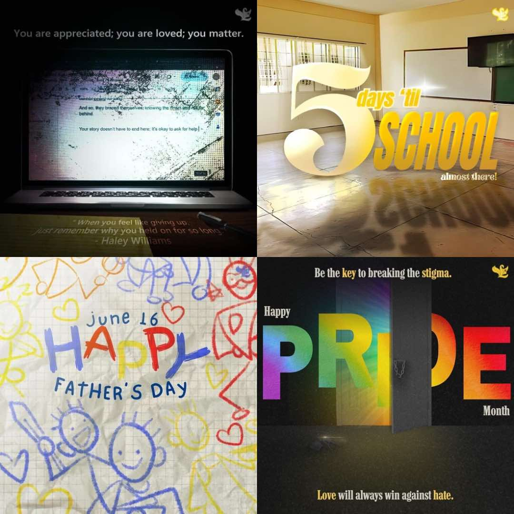
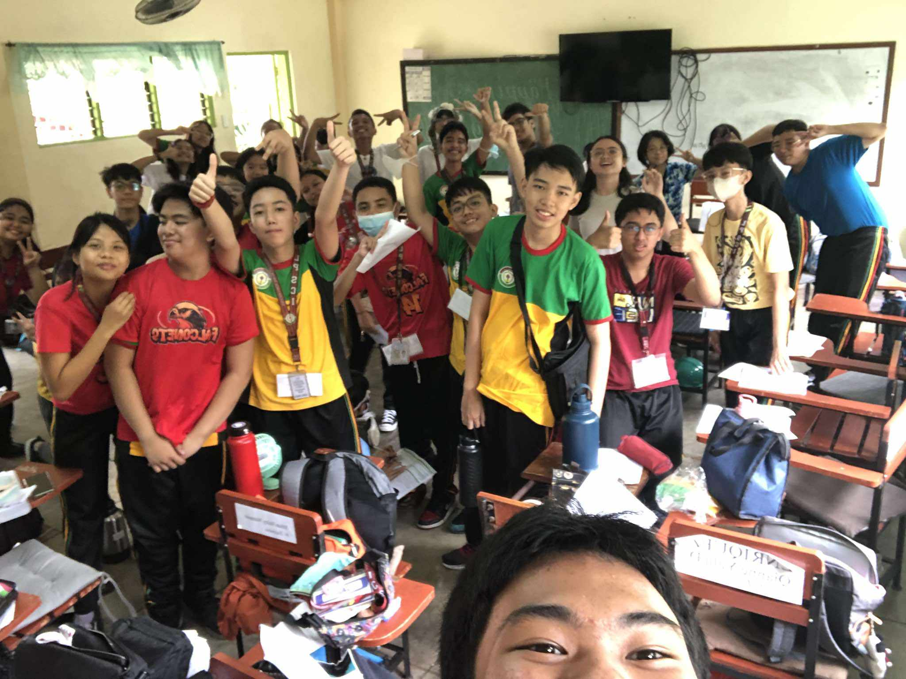
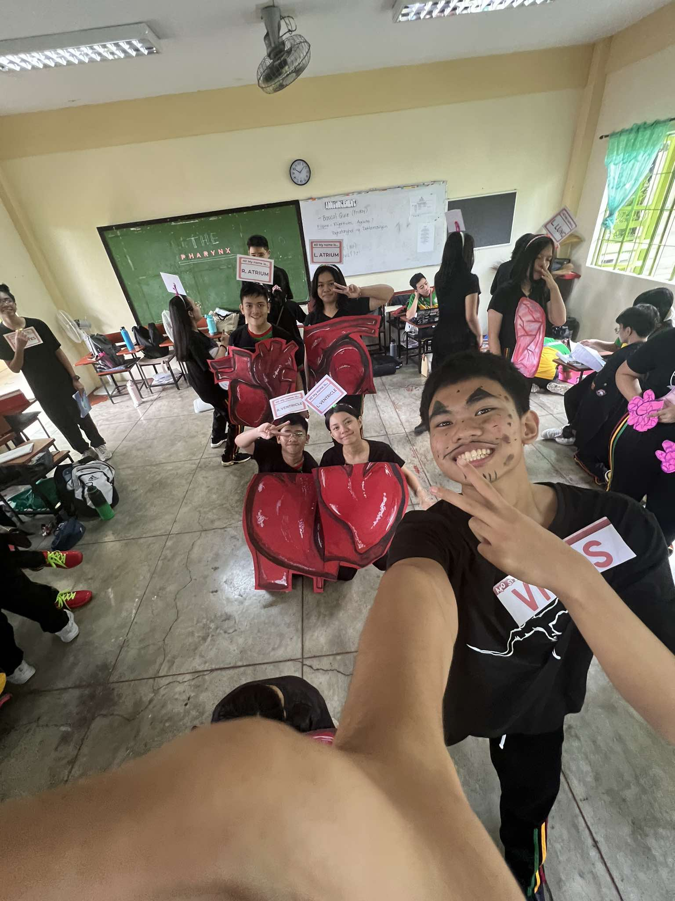
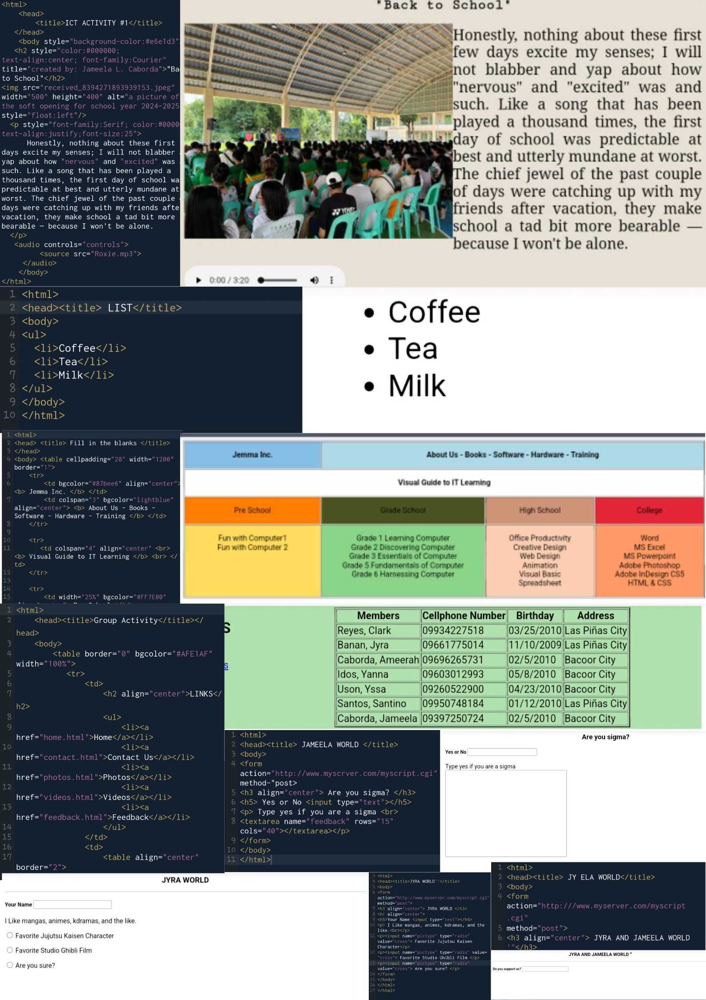
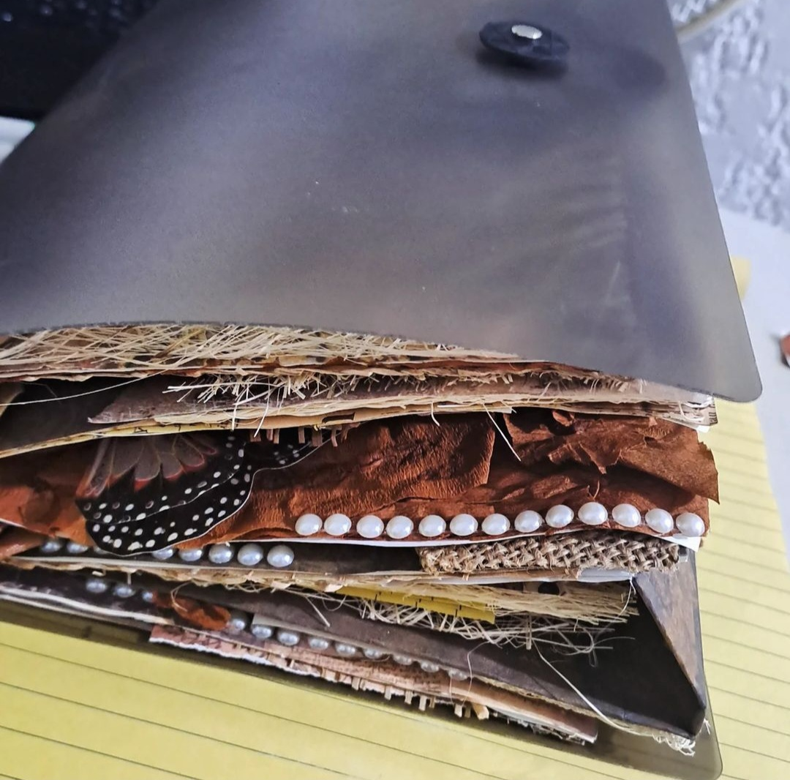
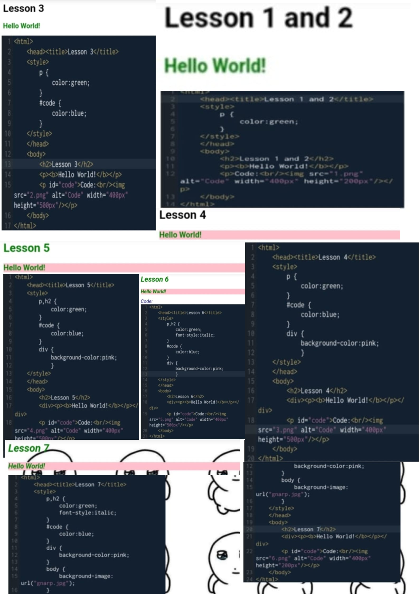
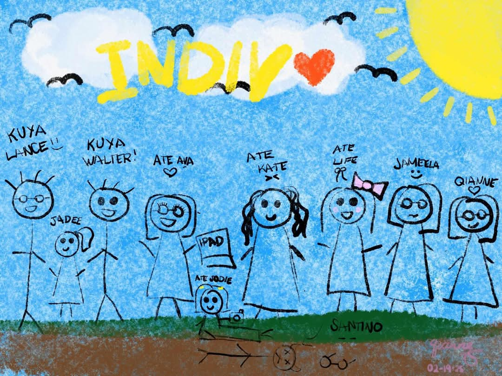
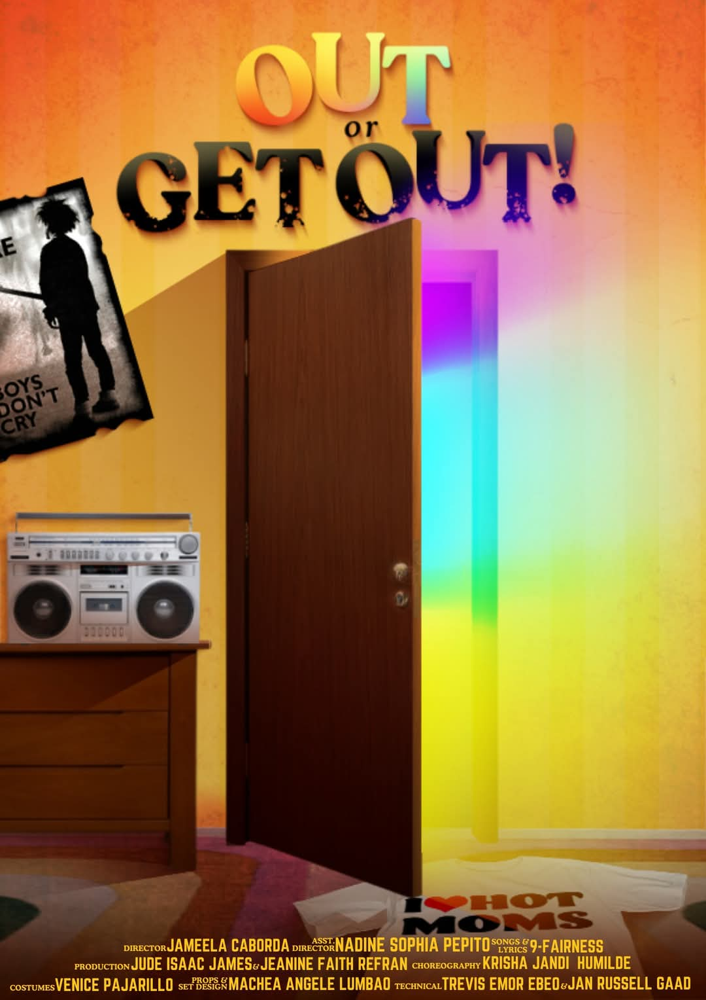
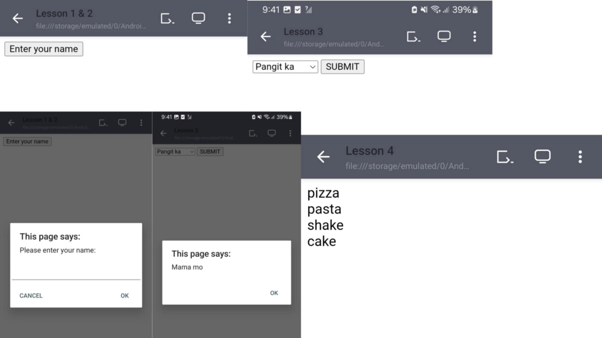

Helloooo!!! <333 My name is Jameela L. Caborda but my friends call me Jam/Ela and I’m from 9-Fairness. Im 14 years old and I live in Bacoor with my mom, twin and 3 dogs; Cream, Cookie and Adonis. Fun fact, my birthday is on World Nutella Day, February 5 and I was born with an autoimmune disease (which means my twin and I get a PWD discount at Jollibee)
LIKES
Annoying my twin
Ice cream
Horror movies and mangas
My friends at school
Mac n cheese
Anything art
DISLIKES
Homework
Math
Hot weather
Ants
Sports
Vegetables

During my free time, I like to draw and post my art and speedpaints to my social media accounts with my artist name CHODERFUL. I love drawing characters from my favorite animes, like Denji and Power from Chainsaw Man and Jotaro from JJBA. But I also like making pubmats for the SSLG and AP club FB page.
ENGLISH SONG PERFORMANCE
For this performance task, we were told to write a song using conditionals, I'm not a good singer by any means but I do love to perform. It's not the best performance but it was good enough to land a perfect score.e.

FILIPINO DEBATE
This activity was challenging for me because I absolutely love debating but I am horrible at speaking in Tagalog. Despite my weakness, I was determined to try my best to lead my team into victory, and I think we did pretty well for a bunch of newbies.

SCIENCE DRAMATIZATION PERFORMANCE
This might be one of my most favorite performances I've directed this year. We were tasked to create a role play that explains how the circulatory and respiratory system work together to help the body function and our role play was amazing, I couldn't have done it without the cooperation and suggestions of my teammates.

BROWSER OUTPUTS AND HTML CODES LESSON 1 – 8
REFLECTION
This quarter, which has been challenging for me, has presented a unique oppurtunity for my personal growth. Unlike my twin who was always considered tech-savvy by my family, I never understood coding and always despised any school activity that involved opening notepad. But the circumstances and requirements of this year has forced me to step out of my comfort zone and try my hand at coding and dabble in the complexities of web page construction.AlthoughI always get confused and disoriented when looking at big blocks of code, I know if I try harder I will get better at coding because the one thing I've learned from last year is that the worst thing I can do when faced with a problem involving academics is give up and run.
GREEN COUTURE COSTUME AP MONTH
HELPING MAKE THIS COSTUME WAS SUCH AN AMAZING EXPERIENCE! Even though many of my classmates refused to cooperate and contribute to the development of this beautiful outfit I still found it enjoyable and I learned how to sow! Our class didn't win but in my heart, Marsha P. Johnson was champion.
SECOND QUARTER AP INTERACTIVE NOTEBOOK

This notebook is my Magnum Opus. This project was the hardest thing I've had the misfortune of making but also the most fun thing I've created because of all the cute trinkets.
BROWSER OUTPUTS FROM WEEK 1 – 7 ICT/TLE

REFLECTION
This quarter in ICT has been both challenging and rewarding. We focused on Cascading Style Sheets (CSS), which is essential for web design. I learned how CSS enhances the visual appeal of websites, making them more user-friendly and professional. From understanding selectors and properties to exploring layouts, colors, and responsive design, I gained a deeper appreciation for how much detail goes into creating even a simple webpage.
One of the biggest struggles I faced was understanding flexbox and grid layouts. At first, the syntax and concepts seemed overwhelming, and I found it difficult to apply them correctly in practice. Debugging CSS issues was another hurdle, as a single misplaced semicolon or incorrect property value could lead to unexpected results. However, I overcame these challenges by reviewing lessons, watching tutorials, and practicing consistently.
Another personal struggle was time management. Balancing ICT projects with other subjects and personal responsibilities required better planning and prioritization. I learned to break tasks into smaller steps and allocate specific times for them, which helped me meet deadlines without feeling overwhelmed.
On the triumph side, successfully completing a responsive website project was a highlight for me. It felt rewarding to see my designs come to life on different screen sizes, showcasing my growth in using CSS effectively. Additionally, collaborating with classmates on group activities helped me improve my teamwork and problem-solving skills.
Overall, this quarter was a period of growth and self-discovery. CSS taught me to be more detail-oriented and patient, while the struggles I faced strengthened my resilience. I am excited to continue learning and improving as we progress in ICT.
DSPC & RSPC 2025

Im 8ncredibly grateful with the friends and connections i made during may prescon journey, placed first in dspc at nagqualify para sa rspc. Malayo na pero malayo pa!
ENGLISH PLAY

Loved directing my cast, my most favorite people in the world; a bunch of talented singers and actors.
BROWSER OUTPUTS FROM WEEK 1 – 3 ICT/TLE

REFLECTION
This quarter in ICT, learning JavaScript was both challenging and rewarding. At first, the syntax and logic felt overwhelming, but hands-on practice helped me improve. I enjoyed making web pages interactive and seeing my code come to life. Debugging was frustrating at times, but it taught me persistence and problem-solving. Overall, this experience deepened my appreciation for coding, and I’m excited to keep learning.
photos by: John Riz D. Dancal
gifs from: tenor.com
dividers from: dividers.crd.co
english video from: Ms. Gia
pubmats, icons and speedpaint by: Jameela L. Caborda